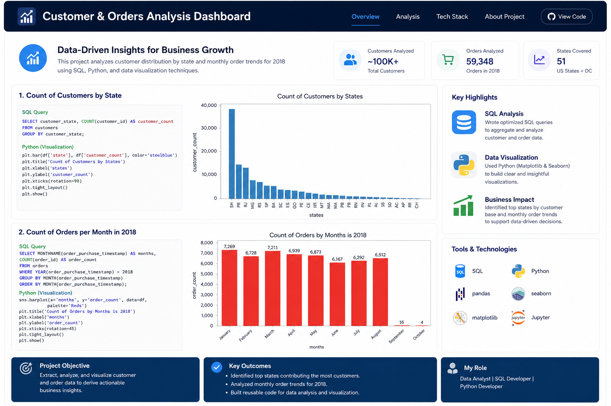
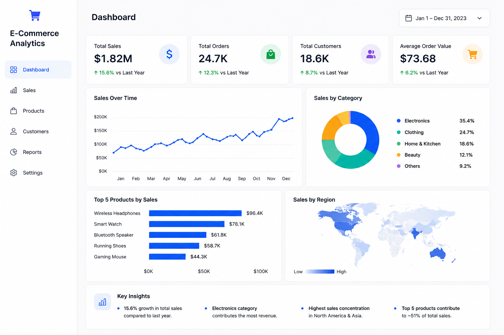
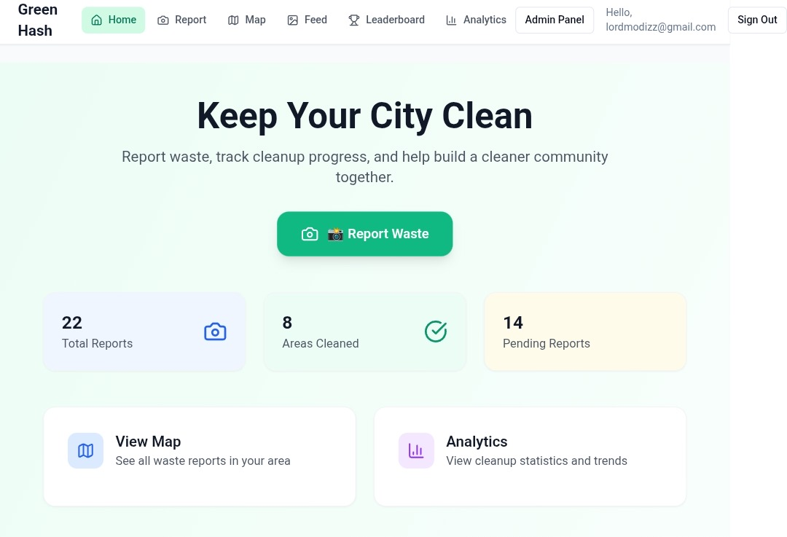
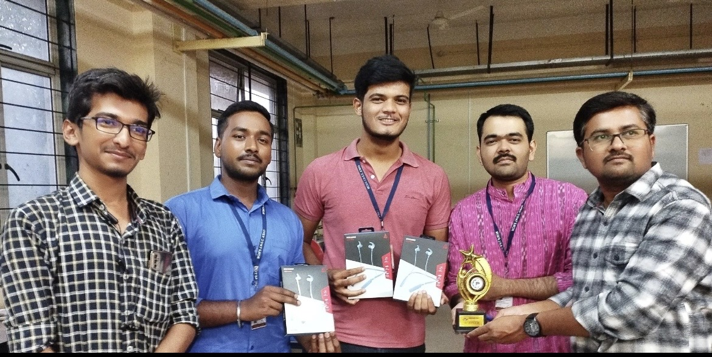

01 — DatabaseDesigned and developed advanced SQL solutions at Yardi Systems — including stored procedures, triggers, packages, and reporting systems that automate business processes and improve database efficiency. Focused on query optimization, data integrity, and scalable architecture for real-world enterprise requirements.

02 — AnalyticsAnalyzed over 10,000+ e-commerce records using SQL and Python to uncover customer behavior, sales trends, and business insights. Built interactive dashboards and visualizations using Matplotlib and Seaborn that transformed raw transactional data into actionable business decisions.

03 — PlatformBuilt a community-driven waste management platform enabling users to report waste issues, track cleanup progress, and view real-time analytics. Developed a full-stack solution with Supabase and PostgreSQL to improve urban transparency and drive cleaner city environments through technology.

04 — CommunitySecured Runner-Up at Supernova 1.0 Hackathon competing against state-level teams. Served as Technical Committee Member at Google Developer Student Clubs (GDSC) — organizing events, workshops, and collaborative learning initiatives. Participated in multiple technical competitions and hackathons throughout my engineering journey.
Designing efficient SQL procedures, packages, triggers, reports, and database solutions for business requirements.
Transforming large datasets into meaningful business insights using SQL, Python, Power BI, and analytics tools.
Building modern web applications and AI-powered automation workflows that improve productivity and user experience.